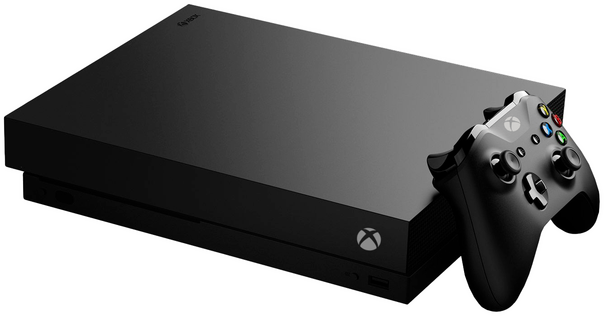

Foi o primeiro console da Microsoft, lançado em 2001. Trouxe um disco rígido interno, gráficos 3D e conexão com a internet. Também marcou a chegada de franquias importantes, como Halo.

Foi o sucessor do Xbox Original, trazendo gráficos em alta definição, uma experiência online aprimorada com a Xbox Live e a possibilidade de jogar com pessoas do mundo inteiro. Porém,
no começo houve varios problemas como o anel vermelho da morte o que fazia com que muitas pessoas deixassem de comprar.
Trouxe melhorias gráficas, integração com serviços de entretenimento, recursos multimídia e maior integração com a internet. Também introduziu o Kinect como acessório de reconhecimento de
movimentos e comandos de voz.

Representam a geração atual de consoles Xbox. Trouxeram SSD ultrarrápido, gráficos avançados, Ray Tracing e suporte a até 120 FPS em jogos compatíveis. Essa versão tem dois modelos sendo o Series X mais potente e o Series S mais acessível, porém com menor desempenho gráfico.
Voltar